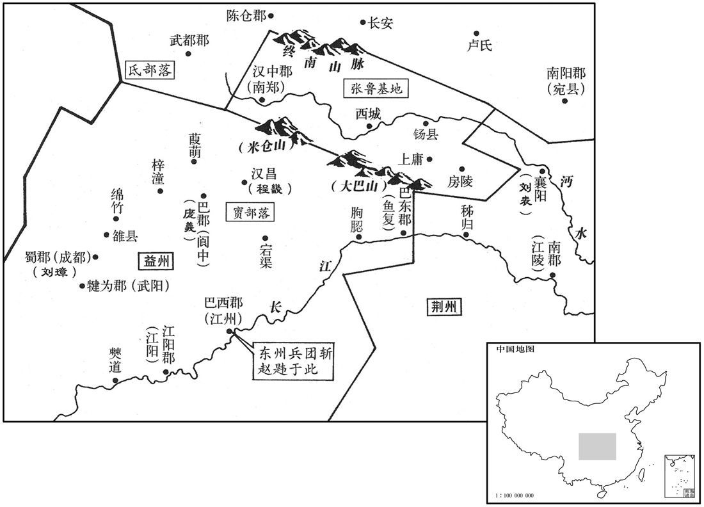

公元201年资治通鉴：本年记事、原文与白话对照
按原书编年位置阅读；追叙和史论不等于本年发生的事件。白话采用所据译本，缺译不以生成译文补齐。
卷64 · 本年记事
公元201年 · 汉孝献皇帝建安六年
建安六年〔（辛巳、二○一）〕
本年事件索引（现代整理）

本年形势与背景参考图
春，三月，丁卯朔，日有食之。
春季，三月，丁卯（疑误），出现日食。
曹操就谷于安民。〔据水经，东平寿张县西界，有安民亭。亭在济水东，亭北对安民山。洪氏隶释曰：济水径须句城西水西有安民山。赵明诚金石录曰：按地里志，须句城，即今中都县。〕以袁绍新破，欲以其间击刘表。〔间，古苋翻。〕荀彧曰：「绍既新败，其众离心，宜乘其困，遂定之；而欲远师江、汉，若绍收其余烬，乘虚以出人后，则公事去矣。」操乃止。夏，四月，操扬兵河上，击袁绍仓亭军，破之，〔绍盖遣军屯仓亭津。〕秋，九月，操还许。
曹操率军移驻到粮食丰足的安民地区。曹操认为袁绍才被击败，打算利用这个间隙去进攻刘表。荀说：“袁绍刚吃了一场败仗，军心涣散，应该乘他尚未摆脱困境之机，一扫而平。而您却要远征长江、汉水之间，如果袁绍收拾残部，乘虚从后面突袭，则您的事业将付诸流水。”曹操便停止了远征荆州的打算。夏季，四月，曹操率军沿黄河行进，炫耀军威，进攻袁绍驻在仓亭的军队，打败袁绍军。秋季，九月，曹操回到许都。
操自击刘备于汝南，备奔刘表，袭都等皆散。〔备合龚都事见上卷上年。〕表闻备至，自出郊迎，以上宾礼待之，益其兵，使屯新野。〔水经注，新野县，在安众县东南。〕备在荆州数年，尝于表坐起厕，慨然流涕。表怪，问备，备曰：「平常身不离鞍，〔坐，徂卧翻。离，力智翻。〕髀肉皆消。今不复骑，髀里肉生。日月如流，老将至矣，而功业不建，是以悲耳。」〔史言备志气不衰，所以能成三分之业。复，扶又翻。〕
曹操亲自率军到汝南进攻刘备，刘备败走，到荆州投靠刘表，龚都等人都四散而逃。刘表听到刘备来的消息，亲自到郊外来迎接，用上宾的礼节接待刘备，又给刘备增加一些部队，让刘备驻扎在新野。刘备在荆州住几年。曾有一次，他在会见刘表时起身上厕所，感慨地流下泪来。刘表感到奇怪，问他是什么原因，刘备说：“我平常身不离马鞍，大腿内侧没有什么肉。如今不再骑马，大腿内侧长出了肉。日月如同流水，人已经快老了，但功业没有建立，所以悲伤。”
曹操遣夏侯渊、张辽围昌豨于东海，〔豨叛操事见上卷三年。豨，许岂翻，又音希。〕数月，粮尽，议引军还。辽谓渊曰：「数日已来，每行诸围，豨辄属目视辽，〔行，下孟翻。属，之欲翻。〕又其身矢更稀；此必豨计犹豫，故不力战。辽欲挑与语，〔射，而亦翻。挑，徒了翻。〕傥可诱也。」〔傥，或然之辞。诱，音酉。〕乃使谓豨曰：「公有命，使辽传之。」豨果下与辽语。辽为说操神武，方以德怀四方，先附者朋汏赏。〔为，于伪翻。〕豨乃许降。〔降，户江翻。〕辽遂单身上三公山，〔上，时掌翻。〕入豨家，拜妻子。豨欢喜，随辽诣操；操遣豨还。
曹操派遣夏侯渊、张辽率军在东海围攻昌，数月未能攻下，曹军粮草已尽，将领们商议撤军。张辽对夏侯渊说：“几天以来，我每次巡视阵地，昌的目光总追随着我，而且他们的箭也比以前射得更少。这必定是昌心中犹豫，所以未尽全力作战。我准备引动他交谈，或许能诱使他归降。”于是，张辽派人对昌说：“曹公有命令，让张辽传达给你。”昌果然下城与张辽交谈。张辽向他盛赞曹操的谋略武功，说曹操正广施恩德，招纳四方豪杰，先归附的可受到重赏。昌便答应投降。张辽就孤身一人上三公山，到昌家中，会见他的妻子，昌十分高兴，随张辽一起去拜见曹操，曹操命昌返回原处。
赵韪围刘璋于成都。东州人恐见诛灭，相与力战，韪遂败退，追至江州，〔贤曰：江州县，属巴郡。今汽州巴县。〕杀之。〔赵韪随刘焉入蜀，将以图富贵，而卒以杀身。行险以徼幸，不如居易以矣命也。〕庞羲惧，遣吏程祁宣旨于其父汉昌令畿，〔汉昌县，属巴郡；汉末分宕渠置。〕索賨兵。〔索，山客翻。〕畿曰：「郡合部曲，本不为乱，纵有谗谀，要在尽诚，若遂怀异志，不敢闻命。」羲更使祁说之，畿曰：「我受牧恩，当为尽节，〔说，输芮翻。为，于伪翻；下为之同。〕汝为郡吏，自宜效力。〔谓父子当各尽节于所事也。〕不义之事，有死不为。」羲怒，使人谓畿曰：「不从太守，祸将及家！」畿曰：「乐羊食子，非无父子之恩，大义然也。〔乐羊，注见四十三卷光武建武十二年。〕今虽羹祁以赐畿，畿啜之矣。」羲乃厚谢于璋。璋擢畿为江阳太守。〔刘璋分犍为江阳郡。宋白曰：泸州之泸川江安县，本江阳地。〕
赵韪率军在成都包围刘璋，东州人恐怕受到屠杀，都拼死作战，杀退赵韪，并追击到江州将他杀死。庞羲听说赵韪被杀，心中恐惧，派属官程祁传达命令给他父亲汉昌县令程畿，征调人队伍。程畿说：“郡里召集队伍，本不是为了叛乱，纵然有人进谗言加以陷害，也只能对上表白我们的忠诚，如果因此而怀有异心，则我不敢遵从命令。”庞羲又派程祁去劝说程畿，程畿说：“我受到刘州牧的大恩，应当为他尽节；而你身为郡的官员，自当为庞太守效力。不义的事情，我宁死也不会去做！”庞羲大怒，派人对程畿说：“如果你不服从太守，将给你全家带来灾祸。”程畿说：“乐羊吃下他儿子的肉，并不是没有父子间的恩情。而是为了维护君臣大义。如今，即使庞太守把程祁煮成肉羹来赐给我，我也会吃下去。”庞羲无奈，便送上重礼，向刘璋道歉。刘璋提拨程畿担任江阳郡太守。
朝廷闻益州乱，以五官中郎将牛亶为益州刺史；征璋为卿，不至。〔卿，九卿也。〕
朝廷听说益州局势混乱，任命五官中郎将牛为益州刺史，征召刘璋入京担任卿，刘璋不去。
张鲁以鬼道教民，使病者自首其过，〔首，式救翻。〕为之请祷；实无益于治病，然小人昏愚，竞共事之。犯法者，三原，然后乃行刑；〔治，直之翻。原，赦也。〕不置长吏，皆以祭酒为治。〔鲁以鬼道教民，其来学者，初名为鬼卒，后号祭酒。祭酒各领部众。长，知两翻。治，直吏翻。〕民、夷便乐之，〔乐，音洛。〕流移寄在其地者，不敢不奉其道。后遂袭取巴郡。朝廷力不能征，遂就宠鲁为镇民中郎将，领汉宁太守，〔袁山松书曰：建安二十年，分汉中之安阳置汉宁郡。〕通贡献而已。
张鲁用鬼神之道教化百姓。他让病人自己坦白所犯的过失，再由他为病人向上天祈祷。这种方法实际上并不能治病，但那些愚昧的人却深信不疑，争着一同信奉张鲁。对犯法的人，张鲁饶恕三次，然后才施用刑法。不设置官吏，而全部由天师道中的首领祭酒来管理各级行政事务。当地的百姓以及夷人对张鲁的制度都很欢迎，外地流亡到汉中地区的人，也不敢不信奉天师道。后来，张鲁又夺取巴郡。朝廷无力进行征讨，只好安抚张鲁，任命他为镇民中郎将，兼任汉宁郡太守。张鲁对特朝廷，只是进贡当地土特产而已。
民有地中得玉印者，群下欲尊鲁为汉宁王。功曹巴西阎圃谏曰：〔谯周巴记曰：初平六年，赵韪分巴为二郡，欲得巴旧名，以垫江为治，安汉以下为永宁郡。建安六年，刘璋分巴，以永宁为巴东郡，垫江为巴郡，阆中为巴西郡。〕「汉川之民，户出十万，财富土沃，四面险固；上匡天子，则为桓、文，次及窦融，不失富贵。今承制署置，势足斩断，〔断，丁乱翻。〕不烦于王。愿且不称，勿为祸先。」鲁从之。
民间有人从地里掘出一颗玉印，张鲁的部下打算尊称张鲁为汉宁王。功曹、巴西人阎圃劝阻张鲁说：“汉水流域有十万户百姓，土地肥沃，物产丰富，四面地势险要，利于固守。上辅佐天子，可望建成齐桓公、晋文公那样的功业；次一等的，也可像窦融那样，不失去富贵。如今，作为皇帝的代表来行使职权，形势上已完全独立自主，不必要王爵的称号。希望您能暂不称王，先不要惹祸。”张鲁听从了阎圃的意见。